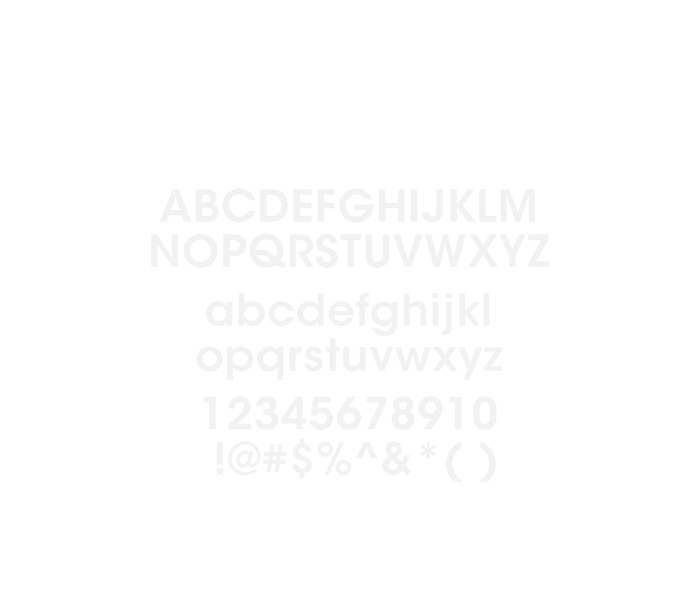

<!DOCTYPE html>
<html lang='en'>
  <head>
    <meta charset='UTF-8'/>
    <title>Project 2</title>
    <link rel="stylesheet" href="css/main.css">
  </head>
  <body>
    <!-- Title -->

      <div class="title"></div>
        
    <!-- about -->
    <p>About</p>
    <p>Avant Garde Gothic has been around since the
      late 19605. It was first used as the logo for a new
      magazine by the publisher and poet Ralph
      Ginzburg. Herb Lubalin, the art director for the
      publication, showed several sketches for the logo
      to Ginzburg but none captured the concept of
      the magazine-to be called AVANT GARDE.</p>

      <p>Finally, for his historic solution, Lubalin adapted gothic caps
       and changed the angles of the A and V so they fit together like
       a wedge of pie. He angularized the second A so that its right stem
       was parallel with the left of the N and halved the T so
        that half of it was part of the N. The perfectly
      round G carved into the angular A in GARDE and
      the D/E combination was made into a ligature.
      Both words were tightly letterspaced to be
      perfectly stacked, and thus could fit as a block
      anywhere on the cover.</P

      <p>Lubalin turned his rough sketch over to type
      designer Tom Carnase, his partner at Lubalin
      Smith Carnase, who rendered the final form. Since
      Lubalin wanted all department heads for the
      magazine to be consistent with the logo, Carnase
      designed additional characters and created
      more ligatures. After making a handful of these
      headlines, he realized there were almost enough
      characters to complete an entire alphabet-and
      Avant Garde Gothic was born.</p>
    <!-- alphabet -->
    
    <!-- Type anatomy -->
    <h2>Type Anatomy</h2>
    <!-- weights -->
    <h2>Weights</h2>
    <!--Alternative  -->
    <p>Alternatives are
      undeniably beautiful.
      The glyphs created by
      alternating and
      intersecting parts of
      letters are elegant and
      visually interesting.</p>
    <!-- examples -->


      
      
      
      
      
      

  </body>
</html>
